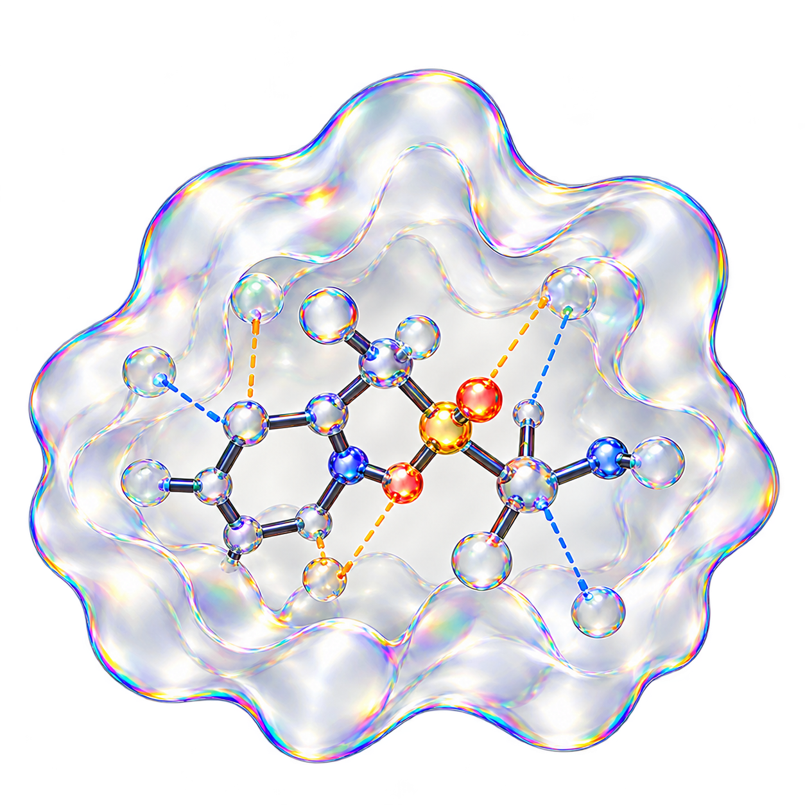

AutoDock Vina 탐색
포켓 3D 상자 안에서 분자 위치·방향과 단일 결합 회전각을 탐색합니다.
CRISTA · STEP 03 · 3D MOLECULAR DOCKING
단백질 주머니 안 분자 결합 자세와 점수를 추정하고 아미노산 결합을 분석합니다.

포켓 3D 상자 안에서 분자 위치·방향과 단일 결합 회전각을 탐색합니다.
점수 함수로 친화도를 kcal/mol로 추정하며 음수 절댓값이 클수록 안정합니다.
상온에서 ΔG -1.36 kcal/mol마다 해리 상수가 10배 줄어듭니다.
ΔG = RT ln Kd
도킹된 3D 좌표에서 주변 아미노산 잔기와의 수소 결합·소수성 접촉을 찾습니다.
Vina 점수는 컴퓨터 친화도 추정치이므로 점수 차이만으로 실제 생체 약효 배수를 단정할 수 없습니다.